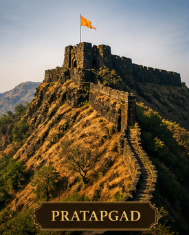

Battles for Swarajya
Every battle a story of impossible courage, tactical brilliance and undying spirit
THE MARATHA SPIRIT IN BATTLE

The most dramatic battle of Chhatrapati Chhatrapati Shivaji's life. Afzal Khan, a giant Bijapur general, led 10,000 troops to crush Chhatrapati Shivaji. In a private meeting, Chhatrapati Shivaji killed Afzal Khan with his wagh nakh (tiger claws) hidden under his armor. Maratha forces then ambushed the leaderless Bijapur army. A complete Maratha victory that shocked the entire Deccan.
DECISIVE VICTORY
Surrounded by 10,000 Bijapur soldiers, Chhatrapati Shivaji needed to escape to Vishalgad. Brave Baji Prabhu Deshpande volunteered to hold the narrow Ghod Khind pass with just 300 soldiers. He fought until he heard the victory cannon of Vishalgad Fort — then fell. This sacrifice is one of the greatest in Maratha history.
CHHATRAPATI SHIVAJI ESCAPED SAFELYMughal viceroy Shaista Khan had occupied Pune. Chhatrapati Shivaji led just 400 men disguised as a wedding procession at night. They scaled the walls and attacked the palace. Shaista Khan barely escaped by jumping out a window, losing three fingers. The Mughals were humiliated and Khan was transferred to Bengal in disgrace.
AUDACIOUS VICTORYSurat was the richest city in Mughal India and their main port. Chhatrapati Shivaji attacked with 4,000 cavalry and looted the city for 4 days, accumulating enormous wealth to fund his campaigns. He deliberately spared the English and Dutch factories, showing diplomatic wisdom. Mughal prestige was severely damaged.
STRATEGIC VICTORY
After Pratapgad, Bijapur sent another general — Rustam Zaman — with a fresh army. Chhatrapati Shivaji met them at Kolhapur and delivered another crushing defeat. The Bijapur cavalry was scattered and the Maratha empire expanded significantly in the southern Deccan. Two decisive victories in a single year sent a clear message to all opponents.
COMPLETE VICTORY
The largest open-field battle Chhatrapati Shivaji ever fought. Mughal forces laid siege to Salher Fort. Chhatrapati Shivaji sent his generals Prataprao Gujar and Moropant Trimbak Pingle who defeated the Mughal army of 40,000 men in an open pitched battle. Over 6,000 Mughal soldiers were killed and thousands captured. One of Maratha history's greatest military triumphs.
LANDMARK VICTORYAurangzeb sent Raja Jai Singh of Amber with a massive army. After fierce resistance, Chhatrapati Shivaji signed the Treaty of Purandar — surrendering 23 forts and 400,000 hun. A tactical retreat, not a defeat. Chhatrapati Shivaji later recaptured all forts within months. He would never surrender his spirit, only bide his time.
STRATEGIC RETREATInvited to Aurangzeb's court in Agra, Chhatrapati Shivaji was placed under house arrest. In one of history's most daring escapes, he faked illness and used fruit basket deliveries to smuggle himself out — then traveled 2,000 km back to Maharashtra disguised as a saint. The Mughal empire was humiliated. The return of Chhatrapati Shivaji energized all of Maharashtra.
LEGENDARY ESCAPE